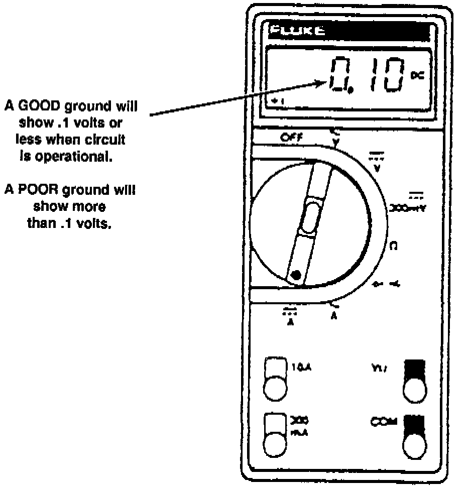
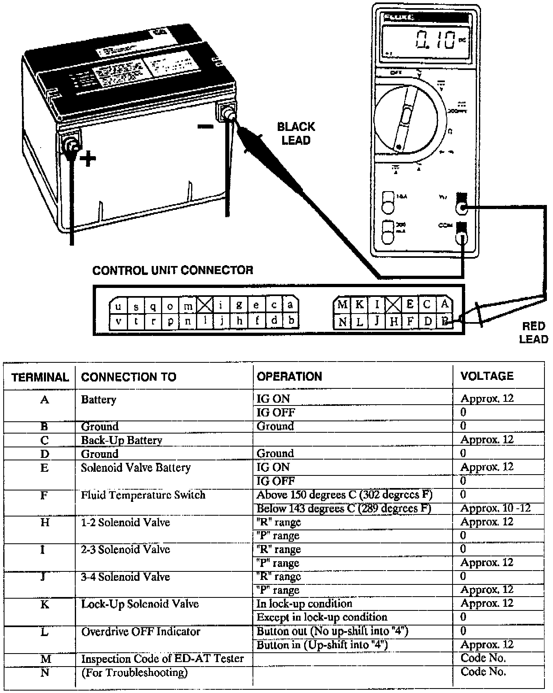
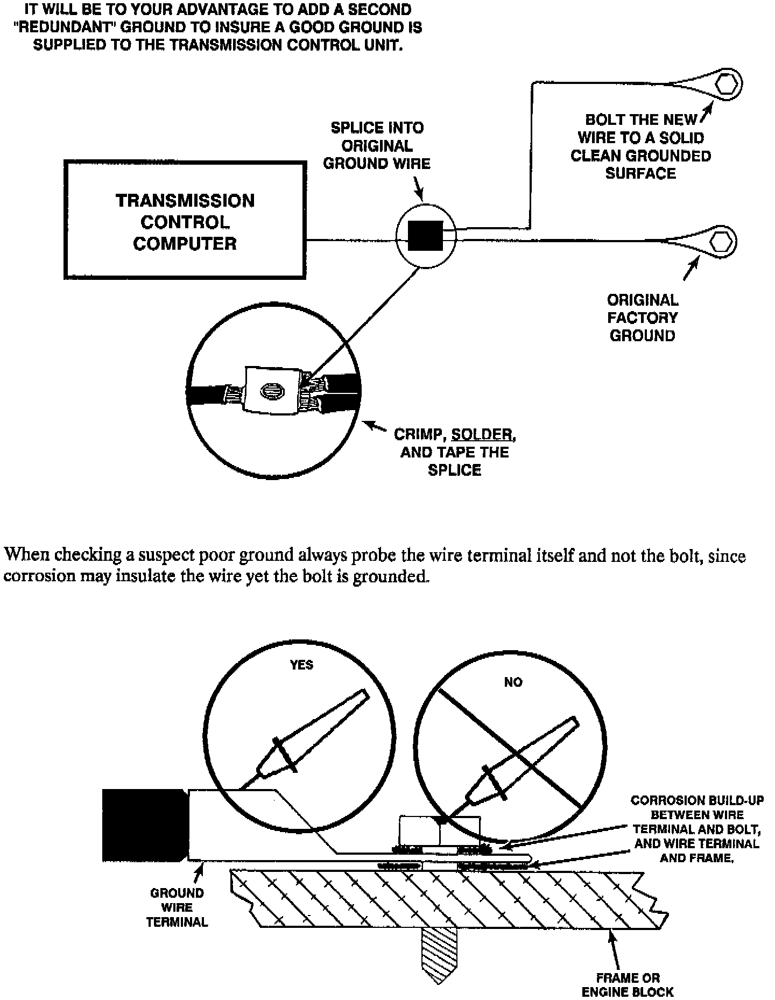

A/T - Intermittent Electrical Problems
TECHNICAL BULLETIN # 132DATE: Sep. 1992
TRANSMISSIONS: All Electronically Shifted Units
SUBJECT: Intermittent Electrical Problems
APPLICATION: All Electronically Shifted Units
Intermittent Electrical Problems
Wrong gear starts, no upshift, no downshift, falling out of 4th gear, etc may be caused by poor grounds. This applies to any electronically shifted unit, import or domestic.

To test for a poor ground, connect the black lead of your digital voltmeter directly to the negative battery post and probe the suspect ground wire with the positive lead. A good ground will read 0.1 volts or less. More than 0.1 volts is a poor ground. Keep in mind the circuit must be operating to accurately check the ground.


Using a service manual for the vehicle you are working on, locate the transmission computer ground circuit. In the example shown, B and D are the grounds. Now with the vehicle running in gear, backprobe B and D with the positive lead. Make sure the negative lead is hooked directly to the NEGATIVE BATTERY POST. The voltmeter must read 0.1 or less.